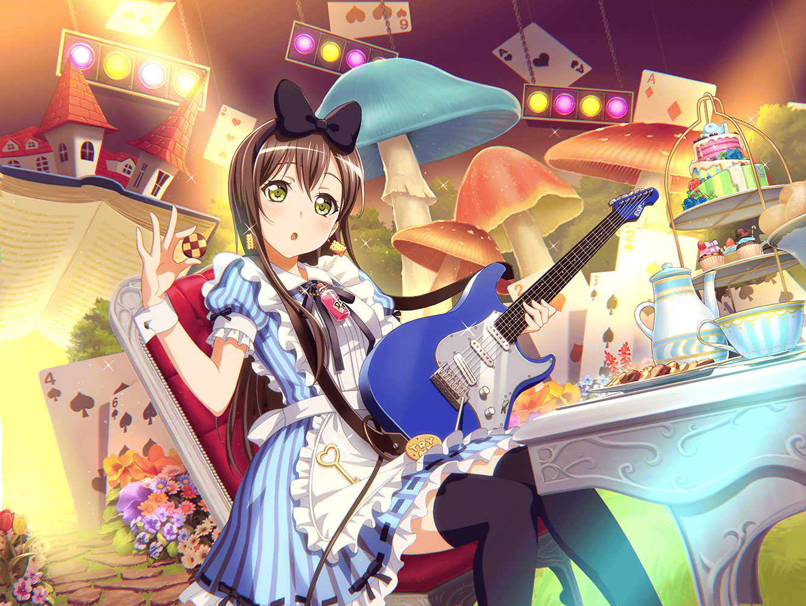

たえ
あ、{{userName}}さんだ
たえ
ねえ、{{userName}}さんは、
ふわふわなものって好き？
たえ
例えば、うさぎとか
たえ
うん、好きなんだね。
私もふわふわ、好きだよ
たえ
うさぎって、ふわふわであったかくて、
それでいい匂いがするんだよ
たえ
まるで綿あめみたいで、とっても可愛いよね
たえ
また触りたいな。
ふわふわなうさぎ
たえ
え？
なんでうさぎの話？
たえ
あのね、この間、学校のうさぎが逃げ出したんだ
たえ
それで私と有咲で追いかけたんだけど、
なかなか捕まえられなかったんだよね
たえ
ちょうどいいところにイヴと千聖先輩と花音先輩がいたから、
三人にも手伝ってもらったんだ
たえ
みんなで一緒に追いかけたんだけど、
うさぎってとってもすばしっこくて捕まえられなくて……
たえ
でも、最後はみんなで一致団結してようやく捕まえた
たえ
それで、みんなすごく疲れちゃったんだけど、
捕まえた後、うさぎ達に触れたんだ
たえ
みんな、うさぎに触ったら和んじゃって、
疲れとかも吹き飛んだよ
たえ
その後はみんなでうさぎと遊んで、小屋に返しておしまい
たえ
たぶん、私ひとりで追いかけてたら捕まえられなかったと思う
たえ
有咲は嫌がってたけど、なんだかんだで手伝ってくれたし、
イヴも花音先輩も千聖先輩も、手伝ってくれたし……
たえ
うん、みんなに感謝感謝
たえ
飼育係の人にも感謝されたし、
もふもふのうさぎに触ることができたからよかった
たえ
きっとあのもふもふは、
みんなで一致団結して捕まえたご褒美だね
たえ
{{userName}}さんは、一致団結して何かをしたこと、ある？
たえ
みんなで一致団結するって、すごく気持ちいいよ
たえ
バンドで演奏してるときとかと同じ。
みんなで一緒にやる一体感がいいんだよね
たえ
{{userName}}さんもわかる？
うん、そうだよね
たえ
そういえば、うさぎに飛び乗られた有咲が声を上げてたよ
たえ
ふふっ……思い出しただけで、ちょっと笑える
たえ
え？
有咲が聞いたら怒りそう？
たえ
そう、かも……
たえ
あ、でもね、有咲ってうさぎに似てるんだよ。
ぶうぶうって鳴くところとか
たえ
有咲もよく、ぶうぶうって言ってるでしょ？
たえ
ふふ。今度よーく聞いてみて？
ぶうぶう、って言ってるから
たえ
あ、そういえば、ご褒美もうひとつあった。
うさぎをもふもふしてたら、パッとイメージが閃いたの
たえ
ふわふわで、うさぎを抱っこしたときみたいに
あったかい曲……そんな曲が作れたらなって
たえ
でも、肝心の歌詞が思いつかないんだよね。
{{userName}}さん、何かいいアイデアないかな？
たえ
……って、急に言っても浮かばないか。
あはは、そうだよね
たえ
うーん……いっそ、歌詞なくてもいいかな？
もふもふ〜ふわふわ〜しか言わないの。どう？
たえ
うん、おもしろそうだよね。……え？
その曲を歌うときは着ぐるみを着てみる……かあ
たえ
着ぐるみ……うん、
それ、すごく面白いと思う
たえ
{{userName}}さん、ありがとう
たえ
今度のライブ、みんなで着ぐるみを着てやるのもいいかも
たえ
ふわふわなうさぎの着ぐるみのポピパ、
うん、可愛くていいよね
たえ
みんなきっと賛成するよね。有咲は……また、ぶうぶうって
言うかな？
たえ
ふふ……面白くなりそう